Coordenadas Geográficas, Mapas y Ubicación — Taller 2 | Eduvision
Observa la imagen y completa los puntos cardinales en su posición correcta.
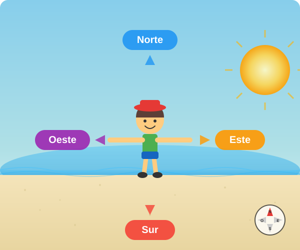
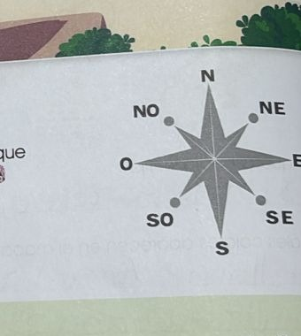
Pista: Escribe el nombre completo del punto cardinal (ej: Norte)
¿Cuáles son los 4 puntos cardinales intermedios?
Une cada elemento del mapa con su descripción correcta.
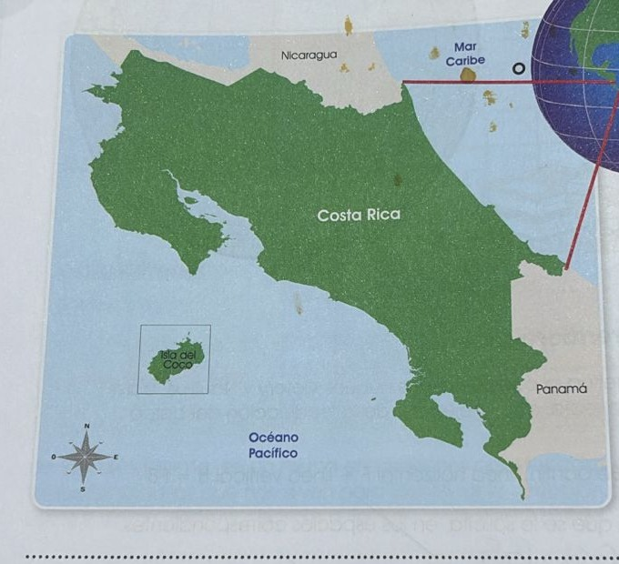
Identifica cada tipo de mapa y responde las preguntas.
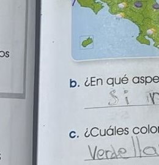
Mapa físico
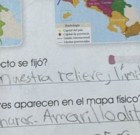
Mapa político
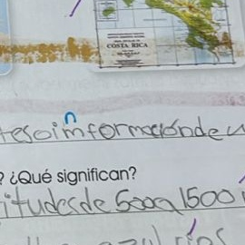
Mapa temático
a) ¿Cuál mapa muestra montañas, ríos, vegetación y relieve natural?
b) ¿Cuál mapa muestra las divisiones del país, provincias y ciudades?
c) ¿Cuál mapa se utiliza para mostrar información sobre un tema específico (clima, cultivos, población)?
d) En el mapa físico, ¿qué significan los colores?
Igual que en "hundir barcos", usa coordenadas para encontrar las posiciones. ¡Haz clic en las celdas!
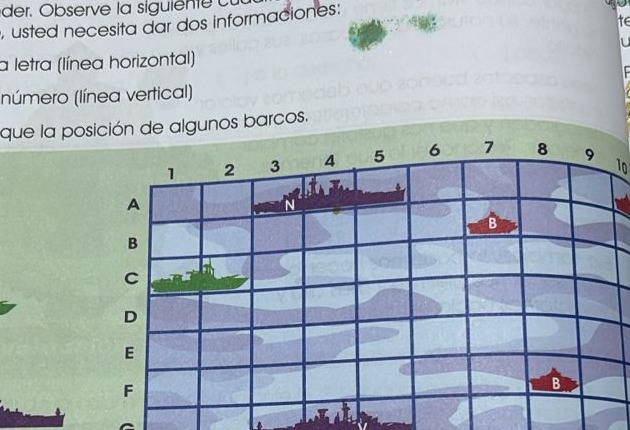
Encuentra las posiciones de los barcos según la imagen:
Haz clic en las celdas correctas para marcar la posición de cada barco.
| 1 | 2 | 3 | 4 | 5 | 6 | 7 | 8 | 9 |
|---|
Según lo aprendido, la línea horizontal en un mapa se llama y la línea vertical se llama
Observa la imagen y responde sobre los paralelos y la latitud.
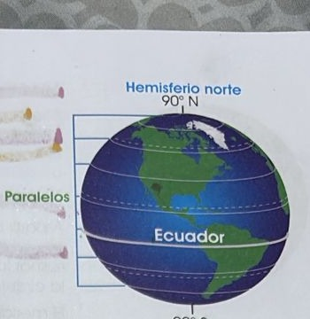
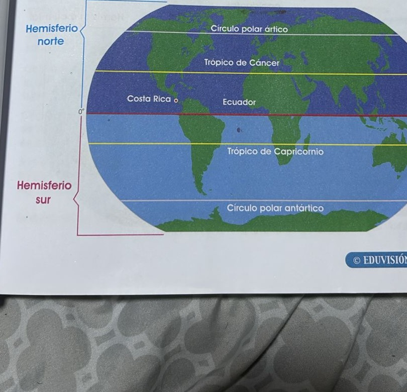
a) Los paralelos son líneas imaginarias trazadas con dirección:
b) El paralelo principal que divide la Tierra en hemisferio norte y hemisferio sur se llama:
c) ¿En cuál hemisferio se encuentra Costa Rica según los paralelos?
d) La latitud es la distancia entre cualquier punto de la Tierra y...
e) ¿Costa Rica tiene latitud norte o sur?
Observa la imagen y responde sobre los meridianos y la longitud.
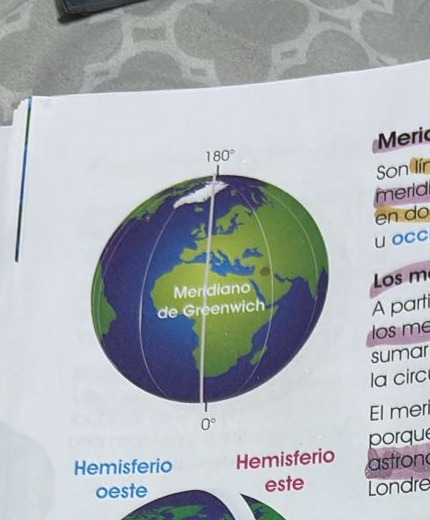
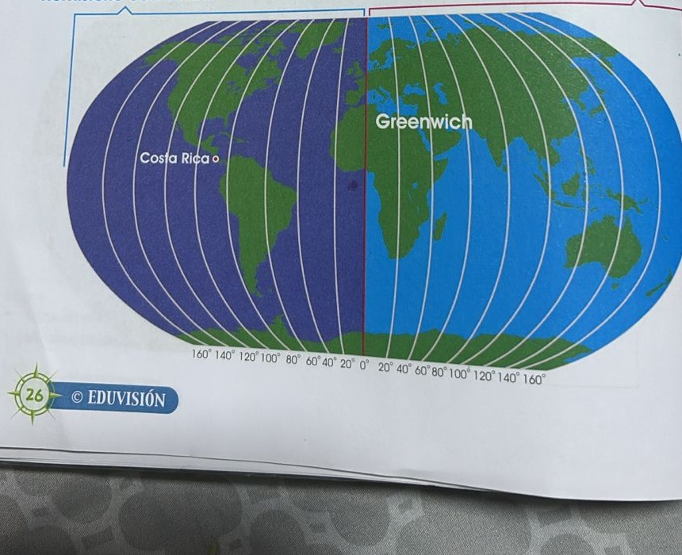
a) Los meridianos son líneas imaginarias trazadas con dirección:
b) El meridiano principal se llama:
c) El meridiano de Greenwich divide la Tierra en:
d) La longitud es la distancia entre cualquier punto de la Tierra y...
e) Según los meridianos, ¿Costa Rica está en el hemisferio...?
f) ¿Por qué el meridiano de Greenwich lleva ese nombre?